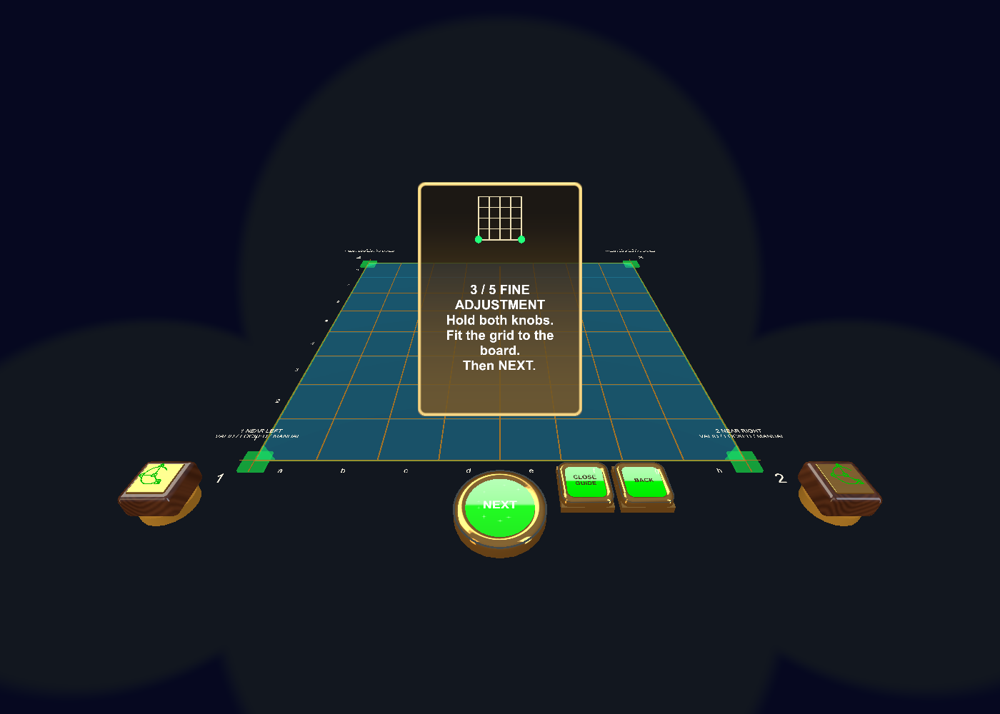

· Living Table
A clearer first game.
Development notes · Work recorded on November 17, 2026.

Where things stand
Living Table brings physical and virtual chess into the same First Steps alpha. The published development record includes a direct virtual start, guided setup and saved games. A real board is optional for starting a virtual game.
Help shape the next session
The next useful feedback is about the first session: can you start a game, find help and return to a saved position without losing your place? Tell us which step needed explanation.
What still needs proving
Physical recognition remains experimental. Manual confirmation is available when recognition is uncertain; lighting, viewing angle and occlusion still matter. The published headset work focuses on Quest 3, and does not establish reliable recognition in every room.
Share feedback with the studioExplore Living Table · All development logs
Based on our previously published development record. This check-in does not announce a new build.